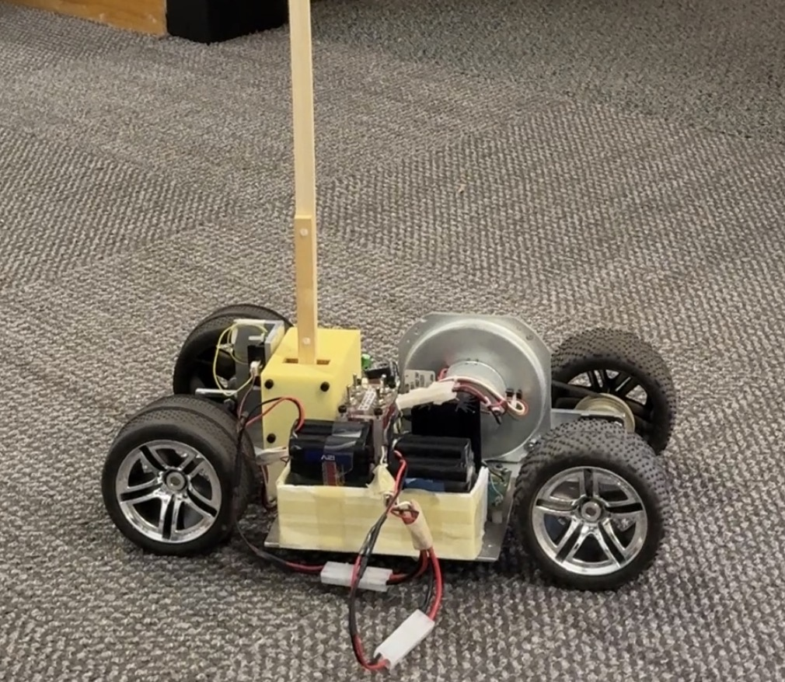
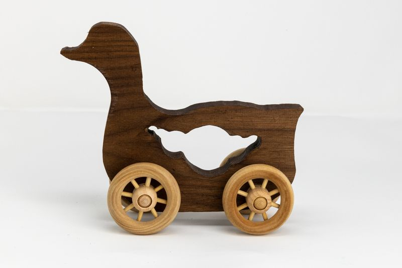
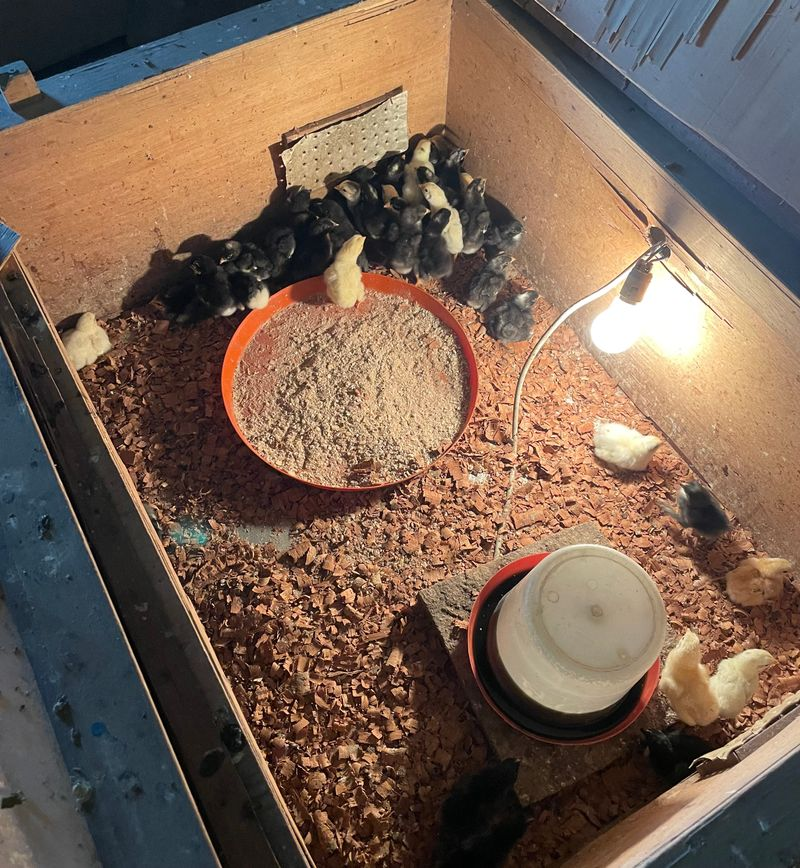
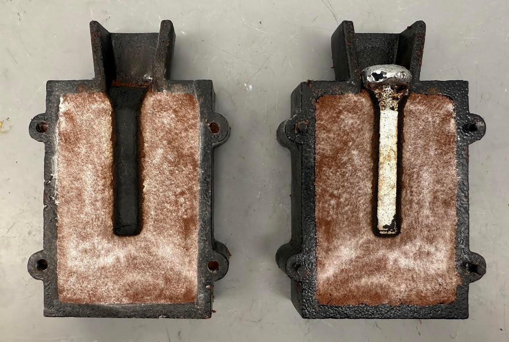
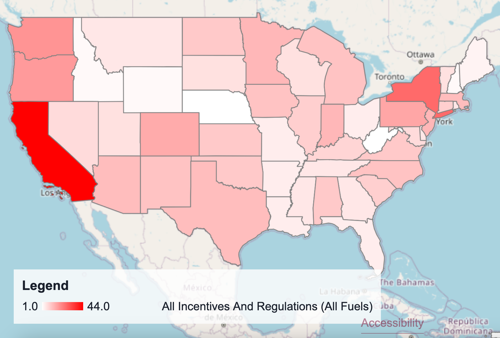
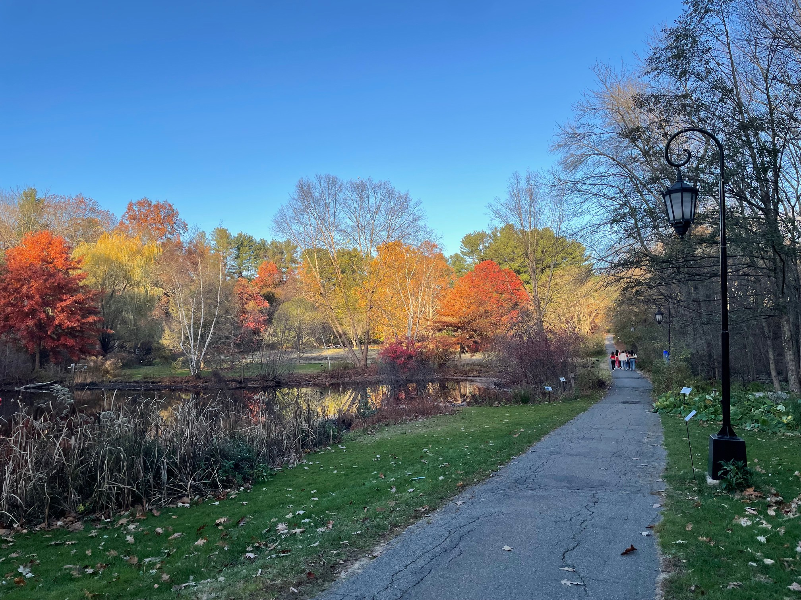

Feedback-Controlled Inverted Pendulum Car
Control systems · Mechanical engineering
Modeling, controller design, and experimental tuning on a balancing car.
Portfolio
A collection of projects in mechanical engineering, design, and research. Ideas explored through modeling, making, and testing.

Control systems · Mechanical engineering
Modeling, controller design, and experimental tuning on a balancing car.

Structural design · Fabrication
From truss concepts and simulation to laser-cut assembly and load testing.

Product design · Prototyping
A collection of physical toys exploring form, fabrication, and interaction.

Human-centered design · Prototyping
Exploring non-electric heat storage for poultry farmers in Cameroon.

Materials · Experimental research
Investigating how silicon content and cooling rate affect microstructure and hardness.

Geospatial research · Sustainability
Geospatial data features supporting transportation decarbonization research.

Technology · Ethics research
Interdisciplinary projects connecting computational work with ethical questions.
Case study under construction
Project page not yet available